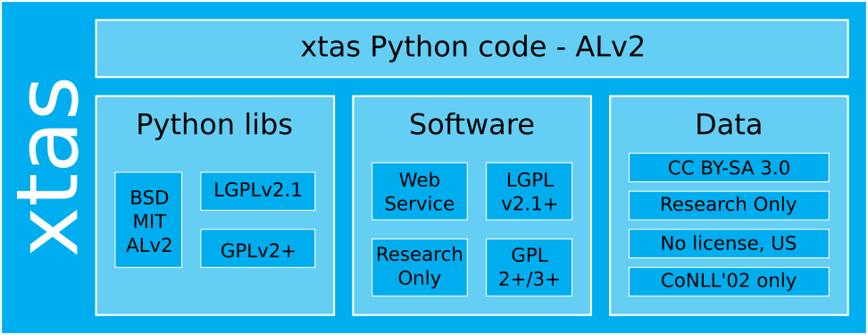
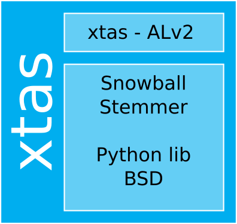
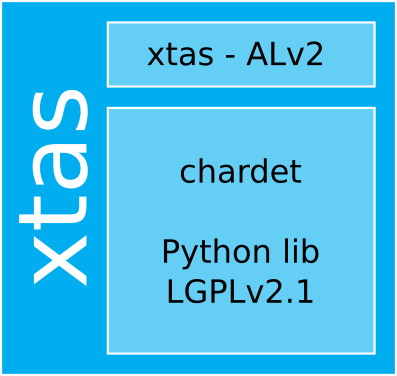
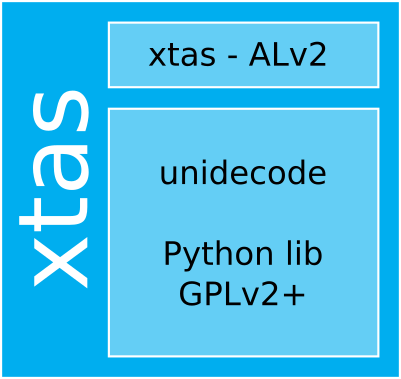
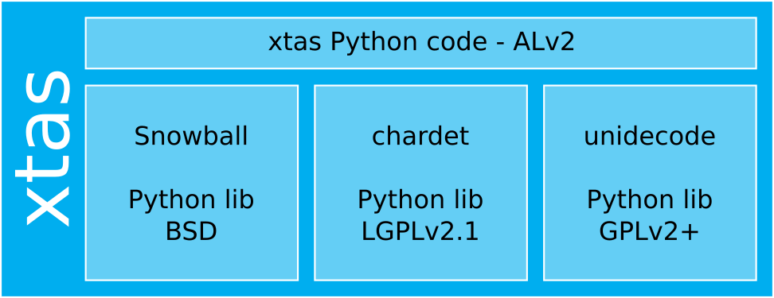
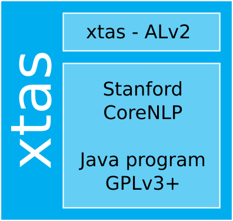
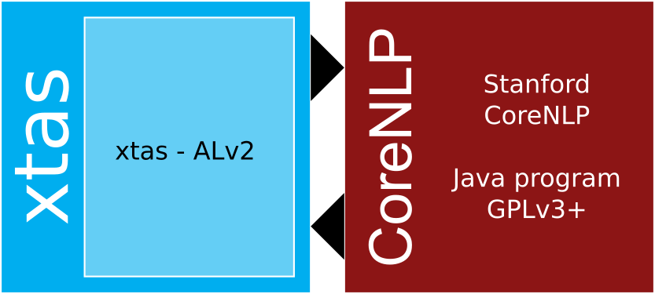

A software license governs the extent of use or redistribution of software, with or without software documentation.
There are many software licenses in existence. Many of those allow the licensee to do very little, but some give you more freedom to use and re-use the licensed software.
The https://choosealicense.com/ website offers a very simple mechanism to help you pick the best license for your project.
To make some sense of this variety, we can categorize them as follows.
| Free | Proprietary | ||
|---|---|---|---|
| Copyleft | Permissive | ||
| Strong | Weak | ||
| GPL1 CDDL2 | LGPL3 MPL4 | BSD MIT5 Apache | Research-only No copying No modification |
1GNU General Public License 2CDDL Common Development and Distribution License 3GNU Lesser General Public License 4MPL Mozilla Public License 5BSD MIT Berkeley Software Distribution Massachusetts Institute
The main distinction among software licenses is between Free software and proprietary software. Free software come with license terms that give you (as defined by GNU)
These four freedoms together effectively neutralize copyright: freedoms 1 and 3 let you create derivative works, and freedoms 2 and 3 let you make copies.
Note that it's perfectly fine to sell copies of Free software, or warranty, or development services; this is about freedom to do things with the software, not about its price.
There are two other, similar definitions in use, the Open Source Institute's Open Source Definition and the Debian Free Software Guidelines. The Free Software definition above, due to Richard Stallman, is the simplest and most concise, and in practice the categories they define are almost identical.
Software that is not Free is proprietary. Software that you're not allowed to copy or modify falls into this category, as does software with usage restrictions, for example "For research use only" or "For non-commercial use only".
There are some confusingly-named subcategories of proprietary software. Freeware is software that can be copied without paying anyone, but comes without source and cannot be modified. Shared source comes with source, but without permission to modify. Neither of these are Free in the above sense.
Within the category of Free software, there are several subcategories, which are distinguished by what is allowed when making derivative software. There are two basic ways of making a derivative work of a program or library: modifying it (forking), and combining it with other software (for example using a library in your program). Of course, you can modify and then combine as well.
Modifying a program leads to a new program that is derived from the original, much like a new edition of a textbook is derived from the original. Both the original and the modified version are works under copyright law, and both of them may be licensed.
As an example of combining software, imagine a program A that uses two preexisting libraries B and C. The complete program A will consist of library B, library C, and some code D that connects the libraries together and perhaps adds additional functionality. Each of these four items is a work of authorship with a license, with A sometimes referred to as the "Combined work", "Work as a whole" or "Larger work".
Different Free software licenses place different constraints on how modified versions and combined works can be licensed.
As the name implies, permissive Free software licenses are the least restrictive. They let you distribute the software unchanged under that license, with or without source code. They will also let you distribute a modified version under any license you like, and let you distribute a combined work under any license.
Examples of well-known permissive licenses are the various BSD licenses, the MIT license, and the Apache License 2.0.
Copyleft licenses add some restrictions to the licensing of derivative works. Like permissive licenses, they let you distribute the software unchanged under that license, but if you distribute a binary, then you have to include the source code as well. Modified versions have to be distributed under the same license as the original; you are not allowed to change the license.
When creating a combined work, a further distinction can be made. Strong copyleft licenses on a component require a combined work to be licensed under the same license as the component. In the example above, if library B is distributed under a strong copyleft license such as the GNU GPL, then program A must be distributed under that same license.
Weak copyleft licenses allow the combined work (A) to be distributed under any license, as long as the source for the licensed component (B) is made available as well under its original license. They may also require that the recipient of the combined work can re-link the modules after modifying the component.
| Copyleft | Permissive | Proprietary | ||
|---|---|---|---|---|
| Strong | Weak | |||
| Use for anything | Yes | Yes | Yes | Sometimes |
| Private changes | Yes | Yes | Yes | Rarely |
| Distribute original | Same license, with source | Same license, with source | Same license, also binary-only* | Rarely |
| Distribute modified | Same license, with source | Same license, with source** | Any license, also binary-only | Rarely |
| Distribute combined | Same license, with source | Any license, binary additions | Any license, also binary-only | Rarely |
*Under any license for the MIT license **Relicensing LGPL to GPL is allowed
If you use multiple external components in your program, then you may end up with multiple different constraints on the license of the combined work. If these constraints conflict, then you cannot legally distribute the result (if proprietary software is involved, then you may not legally be able to make the combined work at all).
If two licenses specify incompatible constraints on the license of the combined work, then they are incompatible.
The GNU GPL for instance is incompatible with proprietary licenses, because it requires the combined work to be licensed under the GPL, with no additional restrictions allowed. Having a part of the work under a proprietary license is such an additional restriction, so you cannot distribute such a combination (unless the copyright owner of the GPL code gives a special permission).
When you use different pieces of software together to solve a problem, and want to distribute the result, here are the questions you have to answer:
The next section shows some examples of how this is done.
Many of the examples in this section relate to xtas. xtas is a natural language processing toolkit for Python that reuses many third-party libraries, programs and data sets, and therefore provides a variety of nice examples.
|  |
|---|
| A graphical overview of xtas. A large rectangle represents the combined work xtas. Within this rectangle, there is a wide low rectangle at the top representing the xtas Python code, licensed under the Apache License v2. Underneath this there are three side-by-side squares, representing respectively Python libraries, Software, and Data, that are used by xtas. Within the Python libraries square, there are three boxes. The first box contains the words "BSD", "MIT" and "ALv2". The seconds box contains "LGPLv2.1". The third box contains "GPLv2+". Within the Software square, there are four boxes. The first box contains "Web Service". The second box contains "LGPL v2.1+". The third box contains "Research only" and the fourth box contains "GPL 2+/3+". The Data square also contains four boxes. The first box contains "CC BY-SA 3.0". The second box contains "Research Only". The third box contains "No license, US" and the fourth box contains "CoNLL'02 only". |
xtas itself is written in Python, and it uses a number of Python libraries that are licensed under common Free licenses. These include the simple permissive BSD and MIT licenses, the permissive Apache License version 2.0 (ALv2), the GNU Lesser General Public License version 2.1 (LGPLv2.1), and the GNU General Public License version 2 or later (GPLv2+).
(Note that the dependency on the GPLv2+ Python library has now been removed, but for the sake of these examples we will assume it to still be there.)
xtas' own Python code is distributed by the authors under the Apache License version 2.0. Since the xtas authors own the copyright, they can license it any way they like (although there's a gray area with respect to GPL dependencies, see below). The xtas authors do not distribute any combined works or binaries, but in the examples below we'll assume that there is a combined work, so that we can consider how it should be licensed.
In the following examples, we'll simplify most of this away, and look at one or a few dependencies in turn.
|  |
|---|
| An illustration of the xtas vs. Snowball example. A large rectangle represents the combined work xtas. Within this rectangle, there is a wide low rectangle at the top representing the xtas Python code, licensed under the Apache License v2. Below that is a square containing the words "Snowball Stemmer" and "Python lib BSD". |
xtas uses Snowball, a Python-based stemming library. Snowball is published under the 3-clause BSD license. Considering only xtas and Snowball, we can answer the three questions as follows.
There are three works: Snowball, the xtas Python code, and the combined work xtas. The combined work derives from Snowball and from the xtas Python code. The others are independent works.
Note that the ALv2 and the LGPL v2.1 explicitly state that source code that is intended to work in combination with a library is not a derivative work, while the binary resulting from (statically or dynamically) linking the pieces together is; other licenses including the GPL do not make any explicit statement about this.
As far as I know, there is no case law on this; we will assume it to be the case in these examples.
Snowball is licensed under a permissive license, so it can be redistributed under that license, and there are no constraints on the license of derivative works. The xtas authors can license it in any way they want.
The xtas Python code, and the xtas combined work, are licensed under the Apache License v2.0.
If xtas authors redistribute Snowball, they must do so under the BSD license granted by Snowball authors. (They cannot give additional permissions for Snowball, since they don't own the copyright, and additional restrictions would be unenforceable for the same reason.)
|  |
|---|
| An illustration of the xtas vs. chardet example. A large rectangle represents the combined work xtas. Within this rectangle, there is a wide low rectangle at the top representing the xtas Python code, licensed under the Apache License v2. Below that is a square containing the words "chardet" and "Python lib LGPLv2.1". |
xtas uses chardet, a Python library for detecting the character set used in a string of text. Chardet is published under the GNU Lesser General Public License v2.1. Considering only xtas and chardet, we can answer the three questions as follows.
There are three works: chardet, the xtas Python code, and the combined work. The combined work derives from chardet and from the xtas Python code. The others are independent works.
Chardet is licensed under a weak copyleft license, so it can be redistributed under the terms of that license. Derivative works can be licensed under any license, but the LGPL v2.1 does require that the recipient can (and is allowed to) modify the library and use the modified library with the derivative work.
xtas as a whole, and the xtas Python code, can be licensed in any way the authors want, so they used the Apache License v2.0. If they distribute chardet, they must do so under the LGPL v2.1 license granted by its copyright owners.
|  |
|---|
| An illustration of the xtas vs. unidecode example. A large rectangle represents the combined work xtas. Within this rectangle, there is a wide low rectangle at the top representing the xtas Python code, licensed under the Apache License v2. Below that is a square containing the words "unidecode" and "Python lib GPLv2+". |
xtas previously used unidecode, a Python library for converting text encoded according to The Unicode® Standard into an ASCII approximation of it. Unidecode is published under the GNU General Public License version 2 or later (GPLv2+). Considering only xtas and unidecode, we can answer the three questions as follows.
There are three works: unidecode, the xtas Python code, and the combined work. The combined work derives from unidecode and from the xtas Python code.
Whether the xtas Python code is a derivative work of unidecode is not clearly defined by the law, and there is no case law on this. The Apache license and the LGPL explicitly state that it is not for the purpose of those licenses, but the GPL does not contain such a clause.
As they are developed separately and there is no code from unidecode in the xtas code, we assume here that it is not a derivative work.
Unidecode is licensed under a strong copyleft license, so it can be redistributed under the terms of that license. Derivative works must be licensed under the same license.
Unidecode is licensed under the GPL version 2 or later. This is known as a disjunctive license. The copyright owners of unidecode offer everyone a GPLv2 license, but also a GPLv3 license, and even proactively any later version of the GNU GPL that may be created in the future. A potential user may choose to accept any one of these licenses, or a combination of them, if they want to copy the work or make derivative works.
If the xtas authors distribute unidecode, they should do so under the GPL version 2 or higher, as arbitrarily removing licenses from someone else's code does not make sense. The combined work xtas must be distributed under the same licenses, or a subset of them. The xtas Python code can be licensed in any way they want.
The xtas authors should choose a license for the xtas Python code that is compatible with at least one of the licenses that unidecode can be distributed under, so that others can assemble and distribute combined works. The ALv2, is compatible with the GPLv3 (but not with the GPLv2, for technical reasons), so they can use it here.
The combined work should then be licensed under the GPL version 3 or later. If it is important that it can be used under the GPLv2 as well, then the xtas authors can license the xtas Python code under both the ALv2 and the GPLv2 (meaning, they offer both licenses, and the user can choose to accept either or both), and the combined work under the GPL version 2 or later.
Finally, if it is decided at some point in the future that the xtas Python source code is a derivative work of unidecode because it calls into it. Even if none of unidecode is included in the work, then the xtas authors must distribute the xtas Python code under at least one of the GPL licenses that unidecode is distributed under. In that case, they can offer xtas under the ALv2 and GPLv2+ set of licenses.
The simplest solution in this case would be to simply license the xtas Python code and the derived work under the GPLv3.
As is probably clear by now, dependencies that are under a strong copyleft license complicate your life if you want people to be able to make proprietary works based on your software.
|  |
|---|
| An illustration of the xtas and all Python libraries example. A large rectangle represents the combined work xtas. Within this rectangle, there is a wide low rectangle at the top representing the xtas Python code, licensed under the Apache License v2. Below this, there are three squares. The first square contains the words "Snowball" and "Python lib BSD". The second square contains "chardet" and "Python lib LGPLv2.1". The third square contains the words "unidecode" and "Python lib GPLv2+". |
Now, we will consider all three of the above examples at the same time.
There are five works: Snowball, chardet, unidecode, the xtas Python code, and xtas the combined work. The combined work is derived from all its components.
The four components are under Free Software licenses, and/or the xtas authors own the copyright, so they can be distributed. The BSD, LGPLv2.1 and GPLv2+ all allow licensing the combined work under the GPL version 2 or higher, so there is at least one license that the combined work can be licensed under.
The xtas Python code should be licensed under the Apache License v2, and the combined work under the GPL version 3 or higher. (See the unidecode example above for alternatives.)
xtas can run the Stanford CoreNLP program, which is written in Java and distributed under the GNU GPL version 3 or later. When the user calls the corresponding xtas function, CoreNLP is started by xtas, the user's input is sent to it through a pipe, and then the CoreNLP output is handed back to the user or processed further.
|  |
|---|
| An illustration of the xtas vs. CoreNLP example. A square represents the combined work xtas. Within this square, there is a wide low rectangle at the top representing the xtas Python code, licensed under the Apache License v2. Below that is a square containing the words "Stanford CoreNLP" and "Java program GPLv3+". |
One interpretation of this situation is that this is no different from calling a function in a library, and that any distribution of xtas as a whole, including CoreNLP, should therefore be under the GPLv3+. Contributing to this interpretation is the fact that xtas will download and install CoreNLP automatically if needed.
|  |
|---|
| Another illustration of the xtas vs. CoreNLP example. A square on the left represents the combined work xtas. Within this square, there is a rectangle representing the xtas Python code, licensed under the Apache License v2. On the right is a separate square representing CoreNLP, with the text "Stanford CoreNLP" and "Java program GPLv3+". Between the squares are two arrows, one at the top pointing from xtas to CoreNLP, and one at the bottom pointing from CoreNLP to xtas. |
Another interpretation is that xtas and CoreNLP are separate works, and that xtas merely communicates with CoreNLP over its standard user interface.
In this interpretation xtas is a separate program that helps a user use the CoreNLP program from the Python language, and not a derivative work of CoreNLP. One can consider xtas analogous to a package installer and a command shell here, which are clearly not derivative works of the packages they install or the programs they start.
Under this interpretation, xtas as a whole (not including CoreNLP) can be distributed under any given license (subject to restrictions imposed by its other dependencies of course).
In practice, the xtas authors do not distribute CoreNLP at all; they only distribute the xtas Python code, under the Apache License version 2.
In this example project we want to combine the OpenIFS global circulation model with the DALES large-eddy simulation model. Both these models are available as libraries, so the project entails combining the OpenIFS and Dales libraries into a single program.
(This is a simplified example, the reality of this project is a notch or two more complicated, and the below is not exactly what we do.)
The OpenIFS library (part of the ECMWF weather model code) is available under a proprietary license that allows running the program and making private modifications, but does not allow distributing the program or any derivatives. DALES is published under the GPL version 3.
There are four works: OpenIFS, DALES, the rest of the program written by us, and the combination of them all. The combined work is derived from its components.
The OpenIFS license does not allow redistribution, so it cannot be distributed. DALES can be distributed, under the GPLv3. The rest of the program is written by us and can be licensed by us if we want to.
The whole combined work cannot be distributed, since it incorporates OpenIFS. If it did not include OpenIFS, it would have to be distributed under the GPLv3, because of the DALES dependency.
The GPL allows making private modifications of software covered by it, with no restrictions, provided the changed software is not distributed at all. The OpenIFS license also allows making private modifications. So we can work on this project (and prepare and run combined works) without violating the licenses, as long as we do not share the results with anyone.
However, if we want to collaborate with someone outside our organisation, this means that we exchange materials between different legal entities, which counts as distribution. We can do that with our own code (which we can even publish openly under the ALv2) and with DALES, but not with OpenIFS or any combined works.
We can try to split up the system into independent programs that run in separate processes and communicate with each other over well-documented, generic interfaces. In this way, there would never be a combined work, just a few independent works that exchange information. Exactly how separate the programs have to be to not be considered a single work is, again, a gray area.
We could also ask the OpenIFS and DALES copyright owners for permission to share combined works between our organization and the outsider. That would remove all uncertainty, but may not be practical in general.
Another option would be to replace one of the dependencies by one written by ourselves. This is usually impractical, both due to time constraints and because the new version would not have the scientific pedigree of the existing one.
The fundamental issue here is that the GPL tries to make everyone shared stewards of the software we use, while proprietary software tries to keep control over it in the hands of a single owner.
Combining them in a single project is complicated and not without legal risk, and you should avoid it. If that's not possible, you should tread carefully.
Additional resources you can read to learn more about software licenses.